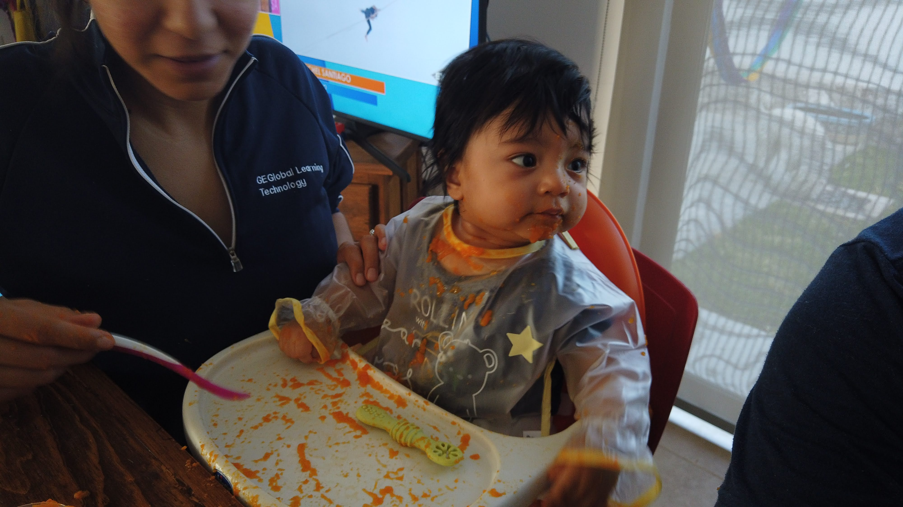

Celebremos esto juntos!
00Días
00Horas
00Minutos
00Segundos


GSAP scrollsmoother
Seamlessly integrated with GSAP and ScrollTrigger. Leveraging native scrolling - no "fake" scrollbars or event hijacking.

Add some lag (the good kind!)
loosen the connection to the scroll to give a feeling of 'follow through.'
stagger...
Easy parallax image effects
Pop your images in a container with overflow hidden, size them a little larger than the container and set data-speed to auto. GSAP does the rest.